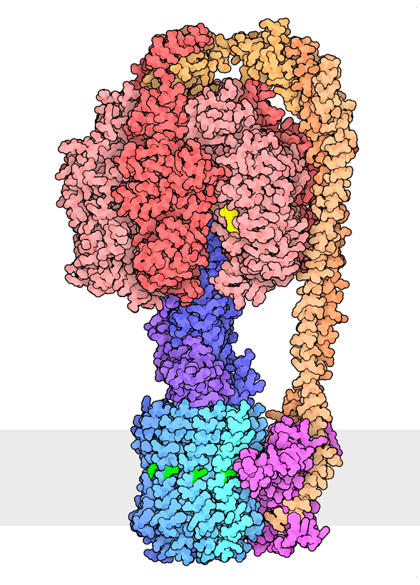

Figure 1: Example animation courtesy of the Kuriyan Lab at Vanderbilt.
In Progress
Different SOTA methods of protein structure design, such as AlphaFold 3, are best at determining the structures of static proteins. We are interested in generating the structures of dynamic proteins such as ATP synthase and myosin. This ongoing research project is considering methods such as fine-tuning current models and designing new objective functions to achieve the desired results. Modeling conformational changes is important to unlock the full capability of the protein landscape. Since many proteins include state switching in their functionality, harnessing this ability will lead to much more expressive protein engineering abilities.
Figure 1: Example animation courtesy of the Kuriyan Lab at Vanderbilt.

Figure 2: ATP synthase rotation mechanism courtesy of the RCSB protein database.